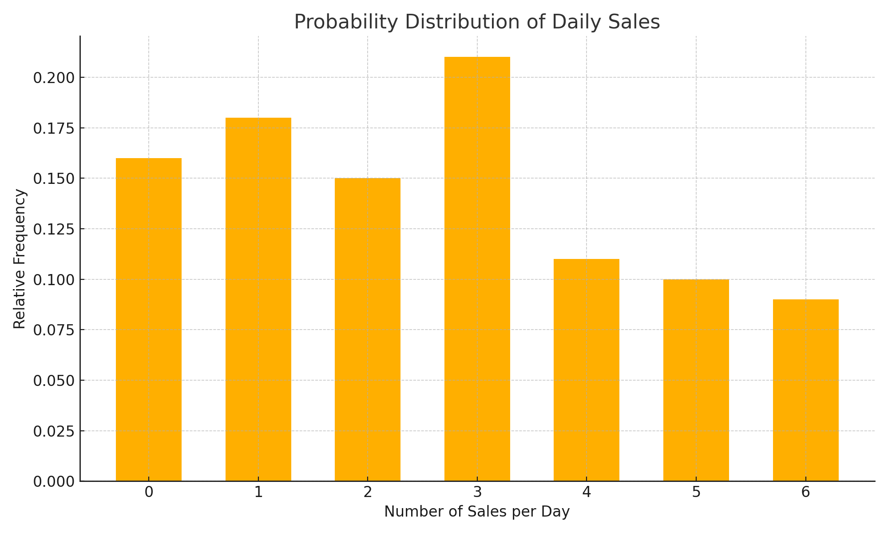
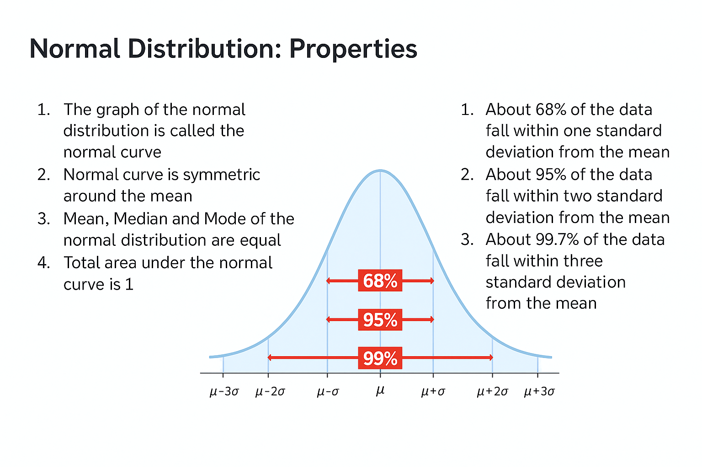
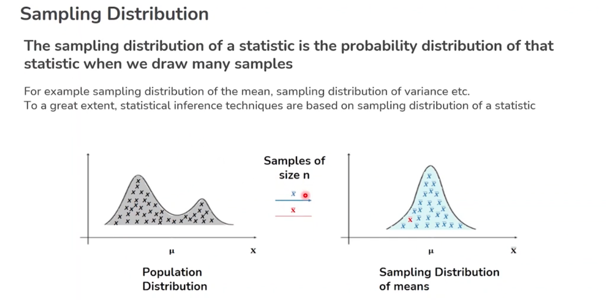
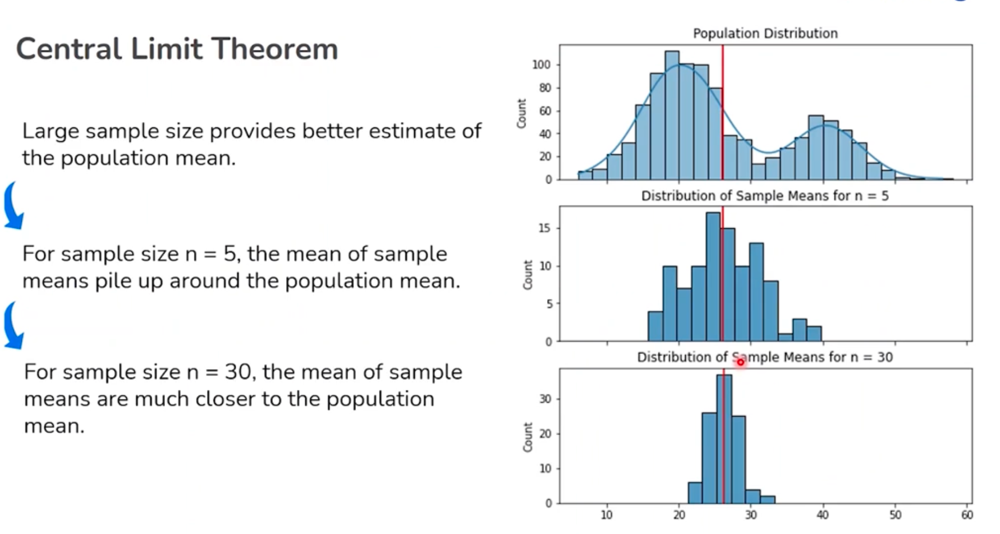
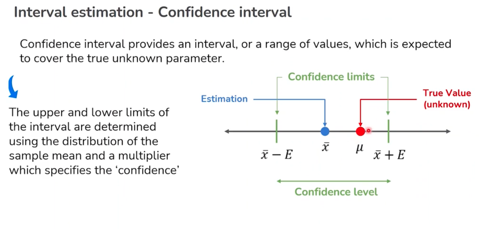

📊 Inferential Statistics
📌 Quick Navigation
- 1. Introduction to Inferential Statistics
- 2. Fundamental Terms in Distributions
- 3. Binomial Distribution
- 4. Uniform Distribution
- 5. Normal Distribution
- 6. Z-Score
- 7. Sampling & Inference Foundations
- 8. Central Limit Theorem
- 9. Estimation
- 10. Hypothesis Testing
- CSV Download
- References & Further Reading
1. Introduction to Inferential Statistics
Inferential statistics help us draw conclusions about populations based on sample data.
# Example: confidence interval
import numpy as np
import scipy.stats as stats
sample = np.array([85, 80, 78, 90, 88])
conf_interval = stats.t.interval(0.95, len(sample)-1, loc=np.mean(sample), scale=stats.sem(sample))
print(conf_interval)
Use Case Example
📊 Used by analysts to infer population metrics from SAT sample scores.
1.1 Random Variable
Suppose there are 1,000 students in the university.
Question: What is the probability that 500 students will pass the upcoming exam?
🧠 Setup
- Each student has a 50-50 chance of passing or failing the exam.
- We are observing the total number of students who pass, which can range from 0 to 1000.
📌 Key Concept
A random variable assigns a numerical value to each outcome of an experiment.
It assumes different values with different probabilities.
This numerical outcome can represent a count (like number of students who pass), a measurement, or any quantifiable result of a probabilistic process.
1.2 Discrete Random Variable
You work for an auto insurance company. Suppose the number of insurance claims filed by a driver in a month is a random variable \(X\) described as follows:
🔢 Distribution of X
Let \(X =\)
| Claims (x) | Probability P(X = x) |
|---|---|
| 0 | 0.95 |
| 1 | 0.04 |
| 2 | 0.008 |
| 3 | 0.002 |
✅ Rule
All probabilities must be non-negative and must sum to 1.
1.3 Continuous Random Variable
Suppose the volume of soda in a bottle is described by a random variable.
Can we list all possible values?
🧪 Example Values
- 498 mL
- 499 mL
- 500 mL
- ...
- What about 499.2129415 mL?
Sometimes it's just not possible to list all values a random variable can take.
🧠 Key Concept
If the random variable can take any value in a given range,
we call it a continuous random variable.
1.4 Probability Distribution
A Probability Distribution describes the values that a random variable can take, along with the probabilities of those values.
🔀 Two Main Types
| Type | Description | Associated Function |
|---|---|---|
| 🟢 Discrete Probability Distribution | Arises from discrete random variables. | Probability Mass Function (PMF) Gives the probability that the variable takes a specific value. |
| 🔵 Continuous Probability Distribution | Arises from continuous random variables. | Probability Density Function (PDF) Determines the probability that the variable lies between two values. |
📌 Summary
- A PMF is used for countable outcomes (e.g., number of claims, dice rolls).
- A PDF is used for uncountable outcomes over a range (e.g., height, volume).
📈 Probability Distribution: Example
A company tracks the number of sales new employees make each day during a 100-day probationary period.
The results for one new employee are shown below. Using this, we construct and plot a probability distribution.
🧮 Tabulated Data
| Sales (per day) | # of Days | Relative Frequency |
|---|---|---|
| 0 | 16 | 0.16 |
| 1 | 18 | 0.18 |
| 2 | 15 | 0.15 |
| 3 | 21 | 0.21 |
| 4 | 11 | 0.11 |
| 5 | 10 | 0.10 |
| 6 | 9 | 0.09 |
📊 Bar Plot Interpretation

🧠 Summary
-
The sum of relative frequencies:
0.16 + 0.18 + 0.15 + 0.21 + 0.11 + 0.10 + 0.09 = 1.00 ✅ -
This confirms a valid probability distribution.
---
2. Fundamental Terms in Distributions
Covers mean, variance, standard deviation, skewness, and kurtosis.
Use Case Example
📈 Financial institutions assess risk using variance and skewness of return distributions.
3. Binomial Distribution
Applicable when analyzing binary outcomes (e.g., success/failure).
from scipy.stats import binom
binom.pmf(k=3, n=10, p=0.5)
Use Case Example
🧪 A/B testing for conversion rates on two landing pages.
🧮 Bernoulli Distribution
The Bernoulli distribution models a random experiment with only two possible outcomes:
1for success (with probabilityp)0for failure (with probability1 - p)
📘 Key Points
- Only one trial is considered.
- Success and failure are non-judgmental: you can assign "success" to any outcome based on your scenario.
🧠 Probability Expression
✅ Common Use Cases
- 🏭 Manufacturing defective parts (success = defective or not)
- 🧪 Medical test outcomes (success = positive result)
A Bernoulli distribution is a special case of the Binomial distribution where the number of trials = 1.
🎲 Probability Distributions
Learn about random variables, types of distributions, and how to interpret discrete and continuous data using bar plots and formulas.
🔢 1. Random Variable
A random variable assigns a numerical value to each outcome of an experiment. It assumes different values with different probabilities.
Example:
Suppose there are 1,000 students in a university.
What is the probability that 500 will pass an upcoming exam?
- Each student has a 50–50 chance of passing.
- The number of students who pass can range from 0 to 1000.
- The total outcomes form a distribution of values → this is a random variable.
🌊 2. Continuous Random Variable
If a random variable can take any value within a range, it’s continuous.
Example:
Volume of soda in a bottle: 498mL, 499.2129415mL, …
Cannot list all possible values — infinite possibilities.
✅ A continuous random variable deals with real numbers within intervals.
🔢 3. Discrete Random Variable
A discrete random variable has a countable set of values.
Example:
Insurance claims per month for a driver:
- Values must be non-negative
- All probabilities must sum to 1
🧮 4. Probability Distribution
Defines values a random variable can take along with their probabilities.
🔹 Discrete Probability Distribution
- Arises from discrete random variables
- Has a Probability Mass Function (PMF)
Gives the probability that a variable takes a specific value
🔸 Continuous Probability Distribution
- Arises from continuous random variables
- Has a Probability Density Function (PDF)
Describes the likelihood a variable falls within a range
📊 5. Bar Plot Interpretation
Shows relative frequencies for discrete values.

🧠 Summary
- The sum of relative frequencies: [ 0.16 + 0.18 + 0.15 + 0.21 + 0.11 + 0.10 + 0.09 = 1.00 ✅ ]
✅ This confirms a valid probability distribution.
🎯 6. Bernoulli Distribution
- Only two outcomes: 1 (success) and 0 (failure)
- Single trial
💡 Used in scenarios like: - Defective manufacturing parts - Outcomes of medical tests
📌 Note: Success/failure labels are not judgmental — it’s a modeling convention.
📦 7. Binomial Distribution
Applies when you extend Bernoulli trials over multiple repetitions.
Example Scenario:
Survey 25 TikTok users to check if they’ve posted a video (Yes/No).
- Each trial is Bernoulli.
- Total number of “Yes” is modeled by Binomial Distribution.
📐 Probability Mass Function (PMF):
- \(n\): total trials
- \(x\): number of successes
- \(p\): success probability
✅ Quiz Insight
A continuous probability distribution is represented by:
✔️ Probability Density Function (PDF)
❌ Not by PMF (that’s for discrete variables)
### 🎯 Binomial Distribution: Assumptions
To model a scenario using a Binomial distribution, the following assumptions must be satisfied:
-
Fixed Number of Trials (n)
The number of experiments or trials is predetermined and remains constant. -
Independence
Each trial is independent of the others — the outcome of one trial does not influence the outcome of another. -
Binary Outcomes
Each trial results in only one of two possible outcomes: success or failure. -
Constant Probability
The probability of success (denoted as \( p \)) is the same for each trial.
These conditions ensure the binomial model is valid for computing probabilities using the binomial formula:
⚠️ What Happens If Binomial Assumptions Are Violated?
In a month of 30 days, what is the probability that it will rain on more than 10 days, if on average the chance of rain on a given day is 20%?
To apply the binomial distribution, we assume:
-
Independence:
The event of rain on a particular day is independent of it raining on the previous day. -
Constant Probability:
The chance of rain does not increase or decrease over the duration of the month.
If these assumptions are satisfied, then we can model the situation using:
- \( n = 30 \) (number of days)
- \( p = 0.2 \) (probability of rain on a given day)
Using the binomial distribution, we can compute:
🧠 Note:
Although the assumptions are not strictly valid, they allow for a simplified calculation that is often good enough for practical estimation purposes.
4. Uniform Distribution
All outcomes have equal probability.
Use Case Example
🎲 Simulating random dice rolls or fair lottery draws.
Scenario
Suppose we roll a die.
The possible outcomes of this event are:
1, 2, 3, 4, 5, 6
Key Characteristics
- ✅ All outcomes have an equal probability of occurrence.
- 🔁 Outcomes are mutually exclusive (no two can happen at once).
- 📊 The probability of each outcome is the same:
[ P(x) = \frac{1}{n} = \frac{1}{6} \text{ for a fair 6-sided die} ]
- This type of distribution is known as a Uniform Distribution.
When to Use
Uniform distribution is:
- Useful when we want unbiased selection.
- Common in random sampling, game simulations, and initial probability models.
Summary
A Uniform Distribution assigns equal probability to all possible outcomes.
It is one of the simplest forms of probability distribution and serves as the foundation for modeling fair and random events.
Uniform Distribution
Suppose we roll a die. The outcomes of this event can be 1, 2, 3, 4, 5, 6.
- All of the outcomes have an equal probability of occurrence and are mutually exclusive.
- We can say that the probabilities of occurrence are uniformly distributed.
- This is referred to as Uniform Distribution.
- ✅ Useful when we are interested in unbiased selection.
Types of Uniform Distribution
There are two types of Uniform Distribution:
1. Discrete Uniform Distribution
- Takes a finite number (m) of values.
- Each value has equal probability of being selected.
For example:
Number of books sold by a bookseller per day can be uniformly distributed between 100 to 300.
2. Continuous Uniform Distribution
- Can take any value between a specified range.
For example:
Tomorrow’s temperature in the United States can be uniformly distributed between 12°C to 17°C.
5. Normal Distribution
A bell-shaped distribution used across disciplines.
from scipy.stats import norm
x = np.linspace(-3, 3, 100)
pdf = norm.pdf(x)
Use Case Example
💡 Height distribution of people in a city, or standardized testing scores.
📊 Normal Distribution: Why Normal
❓ Why is it called the normal distribution?
🔹 They are commonly found everywhere — starting from nature to industry.
🔹 Many useful datasets are approximately normally distributed.
🔹 Examples include:
- Height and weight of adults
- IQ scores
- Measurement errors
- Quality control test results
Normal Distribution: Properties
📈 Key Properties of the Normal Distribution
- The graph of the normal distribution is called the normal curve.
- The normal curve is symmetric around the mean.
- Mean, Median, and Mode of the normal distribution are equal.
- The total area under the normal curve is 1.
🎯 Empirical Rule (68-95-99.7 Rule)
- 68% of the data falls within 1 standard deviation (σ) from the mean (μ).
- 95% of the data falls within 2 standard deviations from the mean.
- 99.7% of the data falls within 3 standard deviations from the mean.
📊 Visual Representation

The image illustrates the bell-shaped curve, highlighting symmetric intervals around the mean and the percentage of data captured within 1σ, 2σ, and 3σ.
✅ Summary
The normal distribution is foundational in statistics and machine learning, allowing for standardized assumptions about data spread and probability within intervals of standard deviation.

6. Z-Score
Measures how many standard deviations a data point is from the mean.
z = (x - np.mean(x)) / np.std(x)
Use Case Example
🚨 Outlier detection in performance metrics.
7. Sampling & Inference Foundations
Understanding population vs. sample, and designing sampling techniques.
Use Case Example
🧬 Pharmaceutical companies conduct clinical trials on samples before full rollout.
Revisiting the Need for Sampling
In many situations, what we have available to us is a sample of data.
🔹 The data we have is finite.
🔹 Till now, the goal was to find ways of describing, summarizing, and visualizing the sample data only.
🔹 Moving ahead, we want to make inferences about the entire population using the sample data.
🎯 Simple Random Sampling
What is Simple Random Sampling?
A sampling technique where every item in the population has an equal chance of being selected.
💡 Why are simple random samples important?
Allows all the entities in the population to have an equal chance of being selected,
and so the sample is likely to be representative of the population.
📝 Key Points
- Every individual in the population has an equal probability of being chosen.
- Unbiased method if implemented correctly.
- Often implemented using random number generators or lottery methods.

8. Central Limit Theorem
Describes how the sampling distribution of the sample mean approaches a normal distribution.
Use Case Example
📉 Enables approximation of sampling behavior for metrics like average wait times.
Central Limit Theorem
The sampling distribution of the sample means will approach normal distribution as the sample size gets bigger, no matter what the shape of the population distribution is.
Assumptions
- Data must be randomly sampled
- Sample values must be independent of each other
- Samples should come from the same distribution
- Sample size must be sufficiently large (≥ 30)
📌 The Central Limit Theorem (CLT) is foundational for inferential statistics and allows us to use normal distribution techniques even when the population is not normally distributed, provided the sample size is large enough.

📘 What Is It?
The Central Limit Theorem (CLT) states that:
When we take many random samples from any population (regardless of its distribution), the sampling distribution of the sample means will approach a normal distribution as the sample size increases (typically \( n \geq 30 \)).
🍕 Practical Example: Pizza Delivery Times
📦 Scenario
You're managing a pizza delivery service and want to understand the average delivery time. The population of delivery times is not normally distributed (e.g., skewed due to traffic, weather, etc.).
🔢 Step-by-Step
- Random Sampling:
- You take 100 samples.
-
Each sample contains 30 delivery times (randomly selected).
-
Calculate Means:
- Compute the mean delivery time for each sample.
-
You now have 100 sample means.
-
Plot the Distribution:
- Even though the original data is skewed,
-
The distribution of sample means will look approximately normal.
-
Use Normal-Based Statistics:
- You can apply z-scores, confidence intervals, and hypothesis testing — because the sample means follow a normal distribution.
🧠 Why It Matters
- ✅ Works with both discrete and continuous populations
- ✅ Helps apply normal distribution tools on non-normal data
- ✅ Critical for inferential statistics
🎯 Key Requirements
- Data must be randomly sampled
- Samples should be independent
- Data must come from the same distribution
- Sample size should be sufficiently large (typically ≥ 30)
9. Estimation
Estimate population parameters like mean or proportion using sample statistics.
Use Case Example
📊 Estimating average customer spend in a supermarket from sample receipt data.
Estimation
Estimation is the process of making inference about a population parameter based on a sample statistic.
🔹 Point Estimation
- Provides a single value (point) as an estimate of the population parameter.
- This estimate is derived directly from the sample data.
- Example:
The population mean is estimated from the sample mean:
Estimated population mean = $40
🔹 Interval Estimation
- Provides a range of values within which the population parameter is expected to lie.
- This range is associated with a confidence level (x%).
- Example:
The population mean is expected to lie between $38 and $42, with 95% confidence
(i.e., x = 95). 
Confidence Interval for Mean μ
🎯 Interpretation of 95% Confidence Interval
- The interpretation of a 95% confidence interval is that, if the process is repeated a large number of times, then the intervals so constructed will contain the true population parameter 95% of the time.
❓ Why not 100% Confidence Interval?
- A 100% confidence interval will include all possible values.
- Hence, there will be no insight into the problem.
---
10. Hypothesis Testing
Formal process for testing claims using sample data.
# Example: t-test
from scipy.stats import ttest_1samp
ttest_1samp(sample, popmean=85)
Use Case Example
🧠 Determine if a new teaching method significantly improves test scores.
📂 CSV Download
👉 Download sat_score.csv
📎 View sat_score.csv
👉 Download debugging.csv
📎 View debugging.csv
🔗 References & Further Reading
- NumPy Docs
- Pandas Docs
- Seaborn Docs
- Plotly Python Docs
- Khan Academy: Statistics & Probability
- MIT OpenCourseWare – Stats
- StatQuest by Josh Starmer (YouTube)
- Scikit-learn User Guide
📄 PDF References
📘 Inferential Statistics – Lecture PDF
📘 Hypothesis Testing – Lecture PDF
These PDFs are stored locally in your project under:
- /docs/pdfs/Lecture Slides - Inferential Statistics.pdf
- /docs/pdfs/Lecture Slides - Hypothesis Testing.pdf
Ensure the paths align with your MkDocs file structure and navigation.